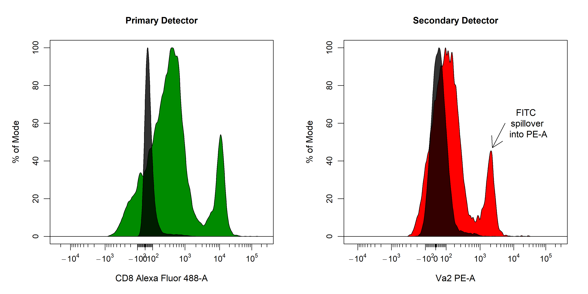
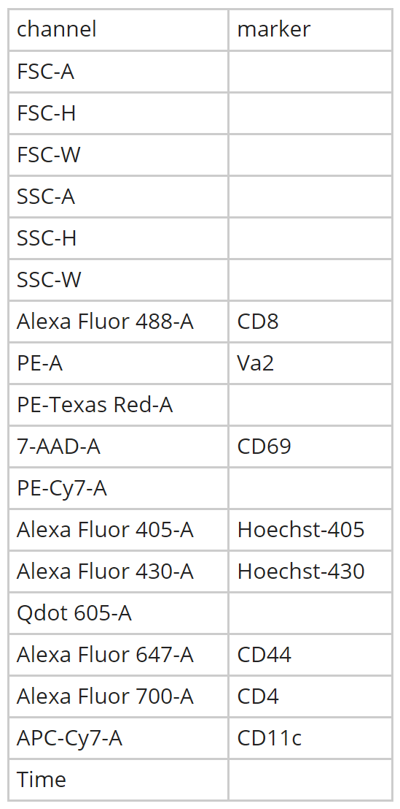
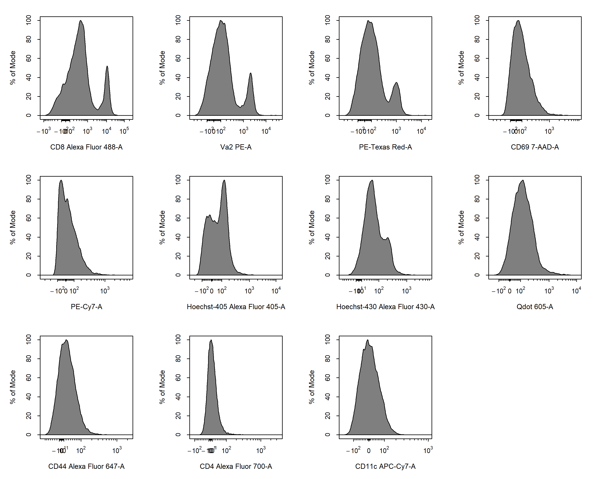
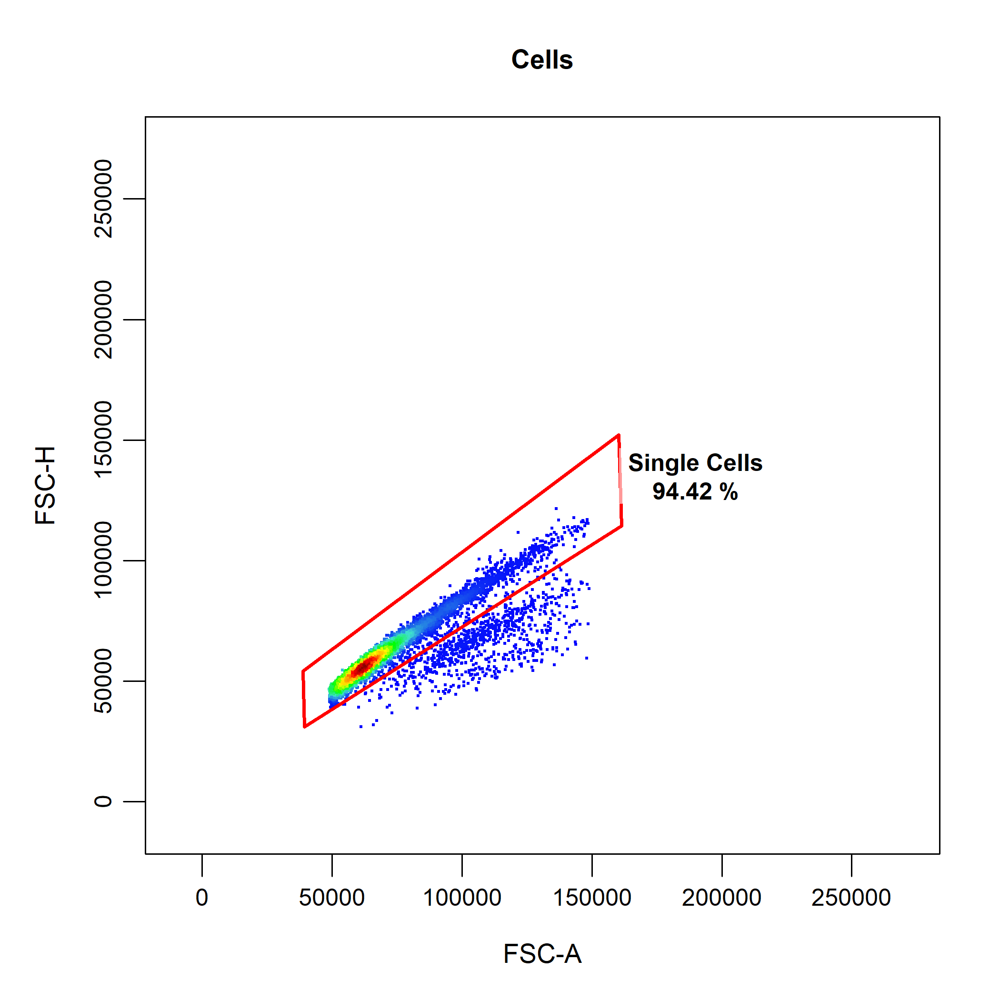
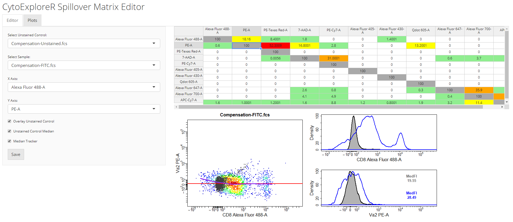
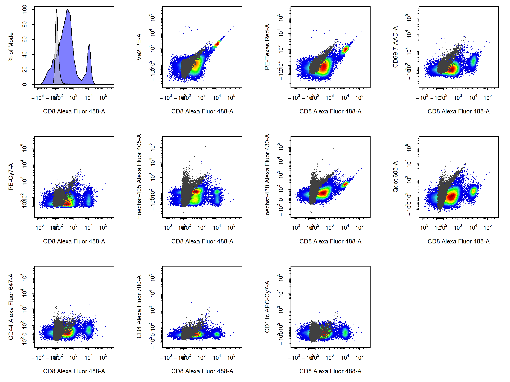

Compensation of Fluorescent Spillover
Dillon Hammill
2021-04-19
Source:vignettes/CytoExploreR-Compensation.Rmd
CytoExploreR-Compensation.RmdIntroduction

In this vignette, we will explore the collection of compensation tools in CytoExploreR and demonstrate their appropriate use to accurately compensate for fluorescent spillover. The following functions will be explored in detail in this vignette:
-
cyto_spillover_computeto automatically compute spillover matrices using the method outlined by Bagwell & Adams 1993. -
cyto_spillover_editto interactively edit spillover matrices in realtime to manually fine tune spillover values. -
cyto_plot_compensationto visualise compensated and uncompensated data in all fluorescent channels to identify any compensation issues.
Demonstration
Prepare Compensation Controls
# Load required packages
library(CytoExploreRData)
library(CytoExploreR)
# Compensation dataset
Compensation
# Save Compensation dataset FCS files to Compensation-Samples folder
cyto_save(Compensation, save_as = "Compensation-Samples")cyto_setup. Users should enter in the marker assignments in the table editor, this ensures that the antibody panel used for the experiment is saved to a csv file for future reference. This Experiment-Markers.csv file will be automatically applied when loading in the fully stained samples. Later on in this vignette, CytoExploreR will ask us to assign a fluorescent channel to each single colour control to determine the degree of spillover into secondary detectors. Users may wish to enter these channels manually in the experiment details table editor by adding a “channel” column and typing in a channel name for each compensation control (entries for unstained controls should be left empty). Typing out names of fluorescent channels manually can lead to typing errors, so for the purpose of this vignette I will show you how you can select these channels from a drop down menu instead.
# Compensation GatingSet
gs <- cyto_setup("Compensation-Samples",
gatingTemplate = "Compensation-gatingTemplate.csv")
cyto_transform. All fluorescent channels be transformed by default unless specific channels or markers are passed through the channels argument.
# Apply logicle transformation to fluorescent channels
gs <- cyto_transform(gs,
type = "logicle")
cyto_gate_draw. Back gating can prove extremely useful in cleaning up the data. For example, we could gate the dead cells using our Hoechst control and overly this population on our initial FSC/SSC gate to adjust the gate to avoid dead cells. For brevity this approach will not be demonstrated here, but I will document this process in an issue for those who are interested.
cyto_gate_draw(gs,
parent = "root",
alias = "Cells",
channels = c("FSC-A", "SSC-A"))
cyto_gate_draw(gs,
parent = "Cells",
alias = "Single Cells",
channels = c("FSC-A", "SSC-A"))
Automated Computation of Spillover Matrix
cyto_spillover_compute. All we need to do is supply the prepared compensation controls, indicate which population we want to use for the calculation and supply a name of csv file to which the computed matrix will be saved. The computed spillover matrix will also be returned as an R object, so let’s assign this to spill so that we can use it later on.
# Automated compensation
spill <- cyto_spillover_compute(gs,
parent = "Single Cells",
spillover = "Spillover-Matrix.csv")cyto_spillover_compute will guide the user through the following steps to automatically compute the spillover matrix:
-
Selection of a fluorescent channel for each compensation control from a drop menu. Channel selection can also be bypassed by manually adding a “channel” column using
cyto_details_editas outlined above, or by supplying achannel_matchcsv file containing a “name” and “channel” column. Channel match files can be manually created usingcyto_channel_matchif desired.
- Gating of the positive (and negative) signal for each compensation control in the assigned channel. In order to properly compute the spillover values, CytoExploreR requires an appropriate unstained reference population. This reference population can take the form of a universal unstained control (as demonstrated below) or unstained events within each compensation control. When using a universal unstained control, the unstained control will be overlaid onto the plot and users be asked to gate the positive signal for each of the compensation controls. Otherwise, users will be asked to gate the negative and then the positive signal for each compensation control. The accuracy of the spillover calculation is heavily dependant on where these gates are positioned, with practice it will become clear that it is best to retain the final peak and tail in the positive gates.
-
Computation and saving of the spillover matrix. It is that simple!
cyto_spillover_computewill take of the computations internally, return the computed spillover matrix and save the matrix to a named csv file for downstream use.
# Computed spillover matrix
spill
cyto_spillover_compute also supports the use of different populations for each compensation control to ensure proper autofluorescence correction. For example, we compensating for a marker such as CD11b it would be desirable to isolate just the myeloid cells and use this population for the spillover computation. This can be important, as myeloid cells may have a distinct autofluorescence profile compared to other cell types in the sample, which will influence the computed spillover value. For this reason, try to make sure that the composition of the populations in negative and positive populations are the same. To use a different parent population for each compensation control, users can manually supply a vector of population names to the parent argument, or manually enter this information into a parent column of cyto_details using cyto_details_edit.
Interactively Edit Spillover Matrices
cyto_spillover_compute may not always get the degree of compensation exactly correct and manual adjustment will be required. Luckily, CytoExploreR has a fantastic interactive spillover matrix editor that allows editing of spillover values in realtime. To start up the spillover matrix editor we can simply change compute from the cyto_spillover_compute call to edit.
# Open CytoExploreR spillover matrix editor
spill <- cyto_spillover_edit(gs,
parent = "Single Cells",
spillover = "Spillover-Matrix.csv")spillover argument. In the 2D scatter plot, we can see a horizontal red line through the median of the unstained control as well as a purple line which tracks the median through the stained control. By definition, the correct spillover value is reached once these two lines cross in the positive population and the medFI of stained population matches that of the unstained population in secondary detectors. As you can see below it looks like we need to remove some more of the FITC signal from the PE detector.
cyto_spillover_edit accepts all cyto_plot arguments so it is possible to make the points bigger or add contour lines to aid in setting accurate spillover values.

save button on the editor tab. The updated spillover matrix will be returned as an R object and updated in the csv file.
Visualise Compensation
cyto_plot_compensation. This is a special plotting function that can perform inline compensation, so that you don’t have to worry about inversing transformations, applyig the compensation and re-transforming the data to check whether the compensation is correct. Simply set compensate to TRUE and cyto_plot_compensation will plot the compensated data for each compensation control in all fluorescent channels. As before, if no spillover matrix is supplied to the spillover argument, the matrix attached to each of the compensation controls will be applied. Of course this function inherits from cyto_plot_theme and accepts all cyto_plot arguments so that you can customise it to your heart’s content.
cyto_plot_compensation(gs,
parent = "Single Cells")
cyto_plot_compensation(gs,
parent = "Single Cells",
spillover = "Spillover-Matrix.csv",
compensate = TRUE)
Apply Compensation to Samples
# Compensation GatingSet
gs <- cyto_setup("Compensation-Samples",
gatingTemplate = "Compensation-gatingTemplate.csv")
# Apply compensation
gs <- cyto_compensate(gs,
spillover = "Spillover-Matrix.csv")
# Data transformations
gs <- cyto_transform(gs,
type = "logicle")
# Apply gates
cyto_gatingTemplate_apply(gs,
gatingTemplate = "Compensation-gatingTemplate.csv")Summary
CytoExploreR has a powerful suite of compensation tools to ensure that your flow cytometry data is appropriately compensated prior to analysis. Here are the key points that were outlined in this vignette:
Compensation of fluorescent spillover must be applied to samples prior to data transformations. If your data looks strange or unchanged after applying compensation it is likely that you are trying to compensate transformed data.
Automated compensation will always perform well if your compensation controls are appropriately gated. It is also important to try and ensure that the composition (cell types) of your negative and positive populations are the same to minimise autofluorescence issues.
The best way to use the spillover matrix editor is to first look at the plots tab to identify issues and then switch over to the editor tab to address these issues. It is not recommended that spillover matrices be edited from scratch as changes can have unexpected consequences. The spillover matrix editor is designed to be a tool to fine tune the spillover values automatically computed by
cyto_spillover_compute. This approach will save you a lot of time!